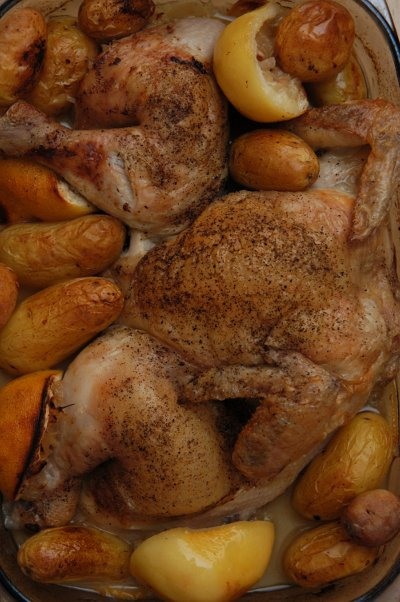

| Zutaten für 4-6 | |
| 1 | Huhn (ca. 1.5kg) |
| 3 | Zitronen |
| Salz | |
| 3 | Knoblauchzehen |
| frischer Rosmarin | |
| 2 El | Olivenöl |
| 1 Tasse | Hühnerbouillon |
| 1 kg | Kartoffeln, geschält und in 5cm Schnitzen |
| 6-8 | Knoblauchzehen |
| 6 El | Olivenöl |
| 1 Tasse | Hühnerbouillon |
| Salz | |
| schwarzer Pfeffer | |
Huhn über den Rücken öffnen und so flach wie möglich ausbreiten. Waschen und gut trocknen.
Kochendes Wasser über die Zitronen geben und 5 Minuten stehen lassen. Dann 2 Zitronen halbieren und mit Salz und gepresstem Knoblauch einreiben. Die dritte Zitrone in feine Scheiben schneiden, Kerne entfernen und mit Salz einreiben.
Huhn mit Haut nach oben in einen gefetteten Bräter geben auf ein Bett von Rosmarin und den halbierten Zitronen. Vorsichtig die Zitronenschnitze unter die Haut schieben mit Rosmarin.
Mit schwarzem Pfeffer würzen. Die Haut mit Olivenöl beträufeln und bei 220°C 45 Minuten rösten. Das Huhn auf einer heissen Platte warm halten.
Zitronenfleisch aus den weich gekochten Zitronen in den Bräter heraus quetschen. Bouillon dazu geben. Falls zu sauer mehr Bouillon zugeben. Bei grosser Hitze auf dem Herd reduzieren. Abschmecken und durch ein Sieb geben vor dem Servieren.
Unmittelbar mit dem Kartoffelstock servieren oder mit den Kartoffeln die in Olivenöl mit dem Huhn mitgebraten wurden. Einen Salat dazu reichen.
Um Kartoffelstock zu machen werden die Kartoffeln mit dem Knoblauch in einer Pfanne mit kaltem Wasser bedeckt. Mit einem halben Esslöffel Salz zum kochen bringen. 15-20 Minuten bei mittlerer Hitze kochen. Dann das Wasser ableeren und auf den niedrig eingestellten Herd zurück geben.
Die Kartoffeln stampfen und allmählich Öl und warme Hühnerbouillon zugeben. Würzen.
Cape Town Food, p57
The Chicken and the Potatoes turned out very nicely but the sauce was bitter. Sandra suspects that the 5 minute watering at the beginning is supposed to switch off the enzymes that might make the juice turn bitter. Also any remaining pips could do this. We think using lemon juice from the bottle (that is free of the natural additives) might improve the recipe. It was a little disappointing. RE 6 April 2009
@LINKBACK_TAG@ @WAKELOCK@